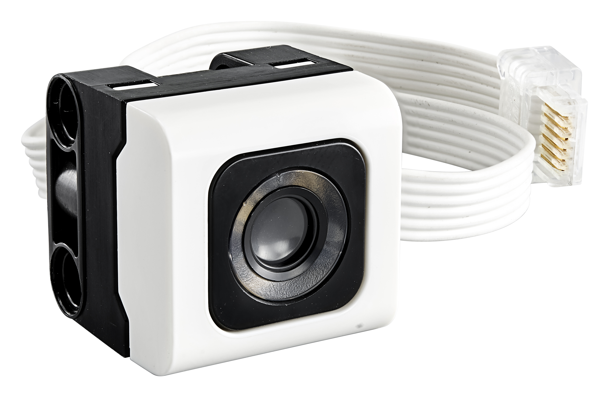

spikedev.sensor¶
A module to interact with the color, distance, and touch sensors
Example¶
from spikedev.sensor import ColorSensor, TouchSensor
cs = ColorSensor()
ts = TouchSensor()
# when the user presses the TouchSensor, read the RGB values from the ColorSensor
ts.wait_for_bump()
print("color sensor RGB values are {}".format(cs.rgb()))
Classes¶
-
class
spikedev.sensor.Sensor(port, desc=None)¶ Bases:
object- Parameters
port (hub.port) – the hub.port.X for this sensor
desc (str) – description, defaults to None
-
set_mode(mode)¶ Set the mode for the sensor to
mode
-
value()¶ Return the current value(s) from the sensor
-
class
spikedev.sensor.TouchSensorMode¶ Bases:
objectFORCEvalue will be from 0 to 10TOUCHvalue will be either 0 or 1TAPvalue is one of None, 1, 2 or 3FPEAKvalue will be from 0 to 10, remembers the highest valueFRAWvalue will be from 380 to 698FPRAWTBDCALIBTBD
-
FORCE= 0¶
-
TOUCH= 1¶
-
TAP= 2¶
-
FPEAK= 3¶
-
FRAW= 4¶
-
FPRAW= 5¶
-
CALIB= 6¶
-
class
spikedev.sensor.TouchSensor(port, desc=None, mode=1)¶ Bases:
spikedev.sensor.Sensor-
value()¶ Return the current value of the
TouchSensor
-
is_pressed()¶ Set the mode to
TouchSensorMode.TOUCH. ReturnTrueif the TouchSensor is currently pressed, else returnFalse
-
is_released()¶ Set the mode to
TouchSensorMode.TOUCH. ReturnTrueif the TouchSensor is currently released, else returnFalse
-
wait_for_pressed(timeout_ms=None)¶ Wait
timeout_msfor theTouchSensorto be pressed. ReturnTrueif the button was pressed withintimeout_ms, else returnFalse. Iftimeout_msisNonethis will wait for forever.
-
wait_for_released(timeout_ms=None)¶ Wait
timeout_msfor theTouchSensorto be released. ReturnTrueif the button was released withintimeout_ms, else returnFalse. Iftimeout_msisNonethis will wait for forever.
-
wait_for_bump(timeout_ms=None)¶ Wait
timeout_msfor theTouchSensorto be bumped. ReturnTrueif the button was bumped withintimeout_ms, else returnFalse. Iftimeout_msisNonethis will wait for forever.
-
-
class
spikedev.sensor.ColorSensorMode¶ Bases:
objectCOLORsingle value, LED is onREFLTsingle value, LED is on, 0 - 100AMBIsingle value, LED is off, 0 - 100LIGHTthree values, LED is off, always reads [0, 0, 0], not sure?RREFLtwo values, LED is on, not sure?RGB_Ifour values, LED is on, (red, green, blue, intensity?)HSVthree values, LED is on, (hue, saturation, value)SHSVfour values, LED is off, not sure?DEBUGTBDCALIBTBD
-
COLOR= 0¶
-
REFLT= 1¶
-
AMBI= 2¶
-
LIGHT= 3¶
-
RREFL= 4¶
-
RGB_I= 5¶
-
HSV= 6¶
-
SHSV= 7¶
-
DEBUG= 8¶
-
CALIB= 9¶
-
class
spikedev.sensor.ColorSensor(port, desc=None, mode=0)¶ Bases:
spikedev.sensor.Sensor-
color()¶ The number of the color. The LED is on.
-
reflected_light_intensity()¶ Set the mode to
ColorSensorMode.REFLTand return the reflected light intensity as a percentage (0 to 100). The LED is on.
-
ambient_light_intensity()¶ Set the mode to
ColorSensorMode.AMBIand return the ambient light intensity as a percentage (0 to 100). The LED is off.
-
hsv()¶ Set the mode to
ColorSensorMode.HSRand return the Hue, Saturation, Value values. The LED is on.
-
rgb(scale_by_intensity=True)¶ Set the mode to
ColorSensorMode.RGB_Iand return the Red, Green, Blue values. The LED is on.
-
-
class
spikedev.sensor.DistanceSensorMode¶ Bases:
objectDISTLreturns a number from 4 to 49DISTSreturns a number from 4 to 24. Does not work from as far away as DISTLSINGLalways returns [18]LISTNalways returns [0]TRAWreturns a number between 80 and 1600LIGHTalways returns [0, 0, 0, 0]PINGalways returns [None]ADRAWalways returns [20]CALIBTBD
-
DISTL= 0¶
-
DISTS= 1¶
-
SINGL= 2¶
-
LISTN= 3¶
-
TRAW= 4¶
-
LIGHT= 5¶
-
PING= 6¶
-
ADRAW= 7¶
-
CALIB= 8¶
-
class
spikedev.sensor.DistanceSensor(port, desc=None, mode=0)¶ Bases:
spikedev.sensor.Sensor